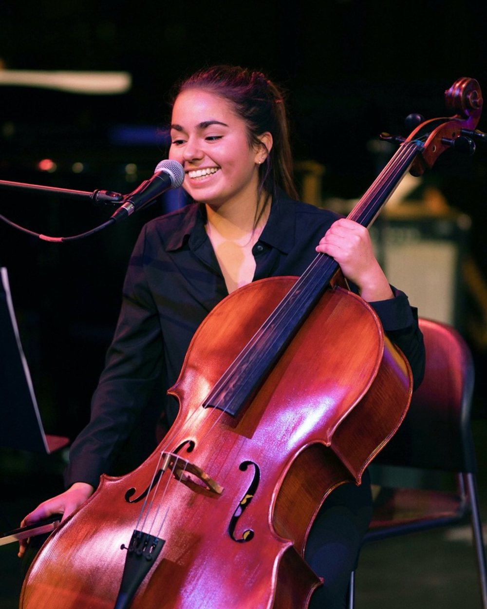

Composer | Songwriter | Producer | Musician
Original scores to existing picture
Grace Kallman is a composer, songwriter, producer, and multi-instrumentalist passionate about creating meaningful, evocative music. She studied at Dartmouth College and Berklee College of Music Online, earning a B.A. in Music and Physics and professional certificates in Composing and Orchestrating for Film and TV and Music Production.
As a classically trained cellist, versatile vocalist, and amateur pianist, Grace brings a unique voice to every project. Drawing on her diverse musical background, as well as artistic and analytical perspectives, she composes across a wide range of styles, from orchestral, chamber, hybrid, and electronic scores to pop, rock, and folk songs. Her work has been recognized through the Spring 2026 Berklee Film Scoring Network Rescore Competition, where she was selected as the winner for her Avatar: The Way of Water scene rescore.
Whether writing for media or the concert stage, she is passionate about crafting music that deepens emotion and serves the story.
